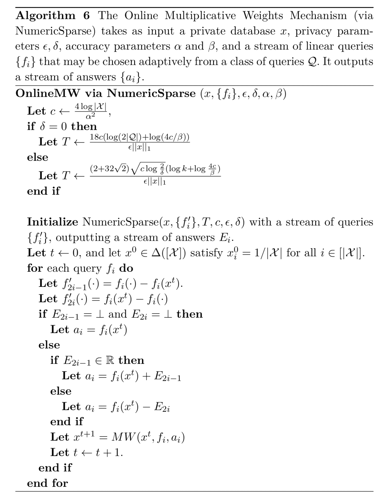

4.2.2 数值稀疏向量可乘权重算法
现在，我们可以将可乘权重更新规则与 NumericSparse 算法结合起来，以提供交互式查询发布机制。对于 (ε,0) 隐私，我们实质上（使用一些较差的常数）恢复了 SmallDB 的边界 对于(ε,δ)- 差分隐私，我们能够使用组合定理来获得更好的边界。 对 NumericSparse 的查询询问的是 fi(x) 所给出的误差大小是否在适当选择的阈值 T 之上，即通过将 fi 应用于当前近似值 xt 与 x 来估计 fi(x) 的误差。也就是说，这些查询询问 ∣f(x)−f(xt)∣ 的值是否大于阈值。出于技术原因（无绝对值），这是通过询问 f(x)−f(xt) 和 f(xt)−f(x) 来完成的。回想一下，NumericSparse 算法的响应是 ⊥ 或某些超过 T 的正值。我们将助记符 E 用于响应，以强调查询正在询问错误。
定理 4.13 在线数值稀疏向量可乘权重算法机制 The Online Multiplicative Weights Mechanism (via NumericSparse) 是 (ε,0)- 差分隐私的。

【证明】 由 NumericSparse 算法的隐私分析即可证明该定理，因在线数值稀疏向量可乘权重算法机制仅通过 NumericSparse 算法访问数据库。
【定理 4.13 证毕】
大体上说，数值稀疏向量可乘权重算法的效用证明是使用 NumericSparse 的效用定理 定理 3.28 得出的。其结论为：仅当查询 ft 是真正有区别的查询时，可乘权重更新规则才被调用，这意味着 ∣ft(x)−f(xt)∣ 的值是“大”的，并且发布的噪声响应是足够“精确地”近似 ft(x)。有了这些假设之后，我们可以应用收敛定理（定理 4.10）来得到结论：权重更新的总次数是小的，因此算法可以回应所有 Q 的查询。
定理 4.14 对于 δ=0 且概率至少为 1−β，对于所有查询 fi，数值稀疏向量可乘权重算法返回答案 ai，使得 ∣fi(x)−ai∣≤3α 对于任何 α 有：
α≥εα2∥x∥132log∣X∣(log∣Q∣+log(α2β32log∣X∣))
【证明】 略
通过优化上述表达式的 α 并去除归一化因子，我们发现 数值稀疏向量可乘权重算法 可以将每个线性查询的准确度设为 3α，且概率为 β。有：
α≤∥x∥12/3(ε36log∣X∣(log∣Q∣+log(β32log∣X∣1/3∥x∥12/3)))1/3
与 SmallDB 算法相当。
通过重复同样的论点，但是使用稀疏向量的 (ε,δ)-差分隐私的效用定理（定理 3.28 ），我们得到了以下定理：
定理 4.15 对于 δ>0 且概率至少为 1−β，对于所有查询 fi，数值稀疏向量可乘权重算法返回答案 ai 满足 ∣fi(x)−ai∣≤3α，对于任何 α 有：
α≥εα2∥x∥1(2+322)log∣X∣logδ2(log∣Q∣+log(α2β32log∣X∣))
再次优化上述表达式的 α 并去除归一化因子，我们发现 数值稀疏向量可乘权重算法 可以将每个线性查询的准确度设为 3α，且概率为 β。有：
α≤∥x∥11/2(ε(2+322)log∣X∣logδ2(log∣Q∣+log(β32∥x∥1)))1/2
这比 SmallDB 算法提供了更好的精度（作为 ∥x∥1 的函数）。直观地说，更高的精度来自算法的迭代性质，这允许我们利用 (ε,δ)-隐私合成定理。SmallDB 算法只运行一次，因此没有机会利用合成定理的特点。
数值稀疏向量可乘权重算法 的准确性取决于几个参数，值得进一步讨论。最后，该算法使用稀疏矢量技术与线性函数的学习算法配对来回答查询。正如我们在上一节中所证明的那样，当总共进行了 k 个灵敏度w为 1/∥x∥1 的查询，且这些查询中最多 c 个可以具有 “高于阈值” 的答案。回想一下，这些误差项的出现是因为稀疏向量算法只能为 “高于阈值” 的查询“支付”隐私预算，因此会增加噪声 O(c/(ε∥x∥1)) 到每个查询。另一方面，由于我们最终将尺度范围为 Ω(c/(ε∥x∥1)) ）的独立拉普拉斯噪声添加到总共 k 个查询中，因此我们期望表示所有 k 个查询的最大误差都比 logk 因子大。但是 c 为多少，我们应该问什么查询呢？可乘权重学习算法为我们提供了一种查询策略，并保证了 c=O(log∣X∣/α2) 查询对于任何 α 都将高于 T=O(α) 的阈值（我们要求的查询始终是：“实际答案与当前可乘权重假设所预计答案有多少不同？这些问题的答案既为我们提供了查询的真实答案，又为您提供了当查询高于阈值时如何适当更新学习算法的说明。综上，这使得我们将阈值设置为 O(α)，其中 α 是满足的表达式：α=O(log∣X∣logk/(ε∥x∥1α2)) 。这样可以最大程度地减少两种误差来源：稀疏矢量技术的误差和未能更新乘法权重假设的误差。